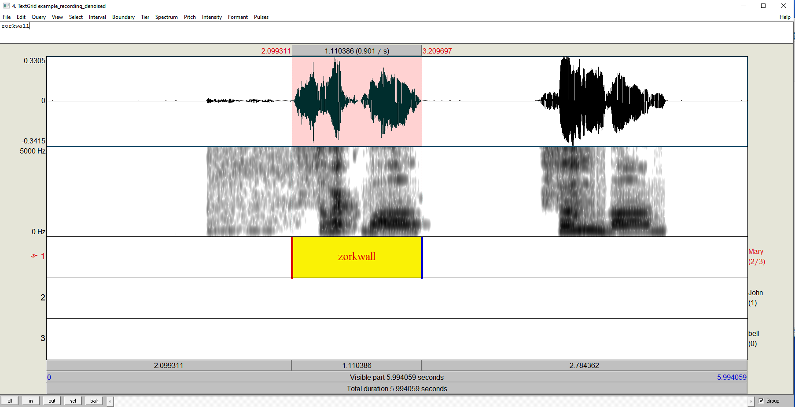

Noise reduction, segmenting, and extracting audio stimuli in Praat
In this tutorial, we will load an audio file recording into Praat and segment the words/sentences into individual .wav files to be played during an experiment.
For an excellent general Introduction to Praat, follow Maria Gouskova’s Praat tutorial. She talks about editing TextGrids (our main activity in this Tutorial) here.
Step 1: Download and Open Praat
Download the Open Source Praat software here.
Once downloaded, open the Praat software by double clicking on Praat icon.
Download the Praat_wavs.zip folder, which contains the materials you’ll need for this tutorial.
Step 2: Load a .wav file into Praat
Click Open -> Read from file… and then select the .wav file you want to open in Praat. In this tutorial we’ll work with the .wav file “example_recording”, which can be found in the Praat_wavs.zip folder. An object called “Sound example_recording” should appear in your list of Objects.
To listen to the audio file, just click “View & Edit”. On Windows computers, you can play and stop replay of the recording by pressing the Tab key. You can play a specific part of the recording by clicking your mouse and dragging it to the desired length, then pressing Tab.
Step 3: Identify noise to reduce in .wav file
If you opened up and listened to the audio file, you will have noticed that there is quite a bit of background noise in the file, as highlighted in the picture below. Of course, you should do all you can to prevent introducing noise into your audio file, such as recording in a soundproof booth, a microphone cover, and proper positioning of the speaker in front of the microphone. But if you’ve got noise anyway, you’re going to want to reduce it.
To reduce the noise of this wav file, you’ll need to tell Praat what the noise is. In this file its quite easy to spot, its the general background sound in between the two words. Select sections of this noise and copy them to the beginning of the file by dragging over a noisy area and copying this selection. Don’t select any part of the wave file that contains your stimuli, as this will tell Praat to treat this as noise! Paste this selection to the beginning of the file. Repeat this until you have at least 2 seconds of copied noise at the beginning of your file.
Step 4: Reduce noise in .wav file
Close out your Editing window and return to your Praat Objects window. Make sure “Sound example_recording” is still selected and then in the menu on the right, click “Filter” and then “Reduce noise…”. Keep the defaults here and change only the “Noise time range (s)”. We know where our noise is, we copied it to the beginning 2 seconds, so we can set the range from 0 to 2. This should be enough to get rid of the noise in our current wav file, but not necessarily for your own. If that’s the case try selecting more/different sections of noise, longer sections of noise, or fiddling with the other noise reduction settings. There is a good discussion about this here. You should now have a new object in your Praat Objects window, “Sound example_recording_denoised”. Open this with “View & Edit” and take a listen. As you can hear, there is still an echo in the file, which comes from being recorded in my unpadded office with a rather cheap microphone, but the general background noise of the street has been reduced. Make sure you save this new reduced noise file, so you don’t have to repeat the noise reduction again in the future! Select the Sound, then click “Save”, then “Save as Wav file…” and save the file as “exmaple_recording_denoised.wav”.
Step 5: Create and open a TextGrid file
Select the Sound Object “Sound example_recording_denoised” and click Annotate -> To TextGrid… and then press ok. An object called “TextGrid example_recording” should appear in your list of Objects. Select both this TextGrid object and the object “Sound example_recording_denoised” and click “View & Edit”. This will open both files in a viewer, which should look something like this picture:

Step 6: Edit the TextGrid and select a sound
Select the first nonesense word in the recording “zorkwall” by clicking somewhere near the beginning of the sound and dragging the selection until the end of the sound. Once you have the sound selected, press Enter. This should create a boundary at the beginning and end of the sound on the selected tier in the Textgrid (whichever one is highlighted). With this selection highlighted, give it the name “zorkwall”. You can click on this selection and play it, and only this selection will play. It should look something like this picture:

Step 7: Adjust the selection
Zoom in on the “zorkwall” selection by going to View -> Zoom in until only this selection fills your screen. You can adjust the boundaries of this selection by clicking on them and dragging them back and forth. Adjust the boundary such that it starts when the sound begins and ends. You will get a feel for this after practice. Use the visual information from the sound wave and spectrogram to guide you. Play the selection several times to ensure that a key piece of sound information is not being cut off.
If the stimuli will be used for a time-sensitive experiment (i.e. where reaction time or eye-movements will be measured), it is essential to take extra care in ensuring that the onset and offset of the selection are accurate.
Step 8: Repeat selection and adjustment
Now repeat Steps 4 and 5 for the second sound in this recording, “foomlong”. This sound starts with a fricative, so make sure you adjust the beginning to include all parts of the sound. Your window should now look something like this:

Step 9: Adjust boundaries to zero crossing using a Praat script
Close out your Editing window and return to your Praat Objects window. Make sure both your Sound and TextGrid objects are selected. Click Praat -> Open Praat Script and select the Praat script “boundary_2_zero_crossing”, which is included in the Praat_wavs.zip folder. This script was given to me (Katie Von Holzen) by Prof. Dr. Nicole Altvater-Mackensen a long time ago, it was originally written by Dennis Pasveer in 2004. This script takes the boundaries we set in the previous steps and adjusts them to the nearest zero crossing to ensure that the beginning and end of the sound occur in silence and don’t cut in in the middle of a soundwave.
In this script file, click Run -> Run and then OK. You will likely get an error message, just click OK. The boundaries in the TextGrid are now adjusted. We will want to save this TextGrid file now, so go to File -> Save as TextGrid text file. Name it “example_recording_denoised.TextGrid” and click Save. You can close this Editing window, as well as the Praat Info and “Run script: Overwrite original TextGrid files or create new ones” windows.
Step 10: Save selected sounds using a Praat script
Make sure both your Sound and TextGrid objects are selected. Click Praat -> Open Praat Script and select the Praat script “save_wavs”, which is included in the Praat_wavs.zip folder. This script was given to me (Katie Von Holzen) by Prof. Dr. Nicole Altvater-Mackensen a long time ago, I am no longer sure of the original author. This script takes the boundaries we selected which have text in them (zorkwall and foomlong) and saves each of them as an individual wav file in the folder of your choice.
In this script file, click Run -> Run. In the window that opens, type in the desired directory location where you would like to save the wav files. Don’t forget to put a slash at the end of your directory location, so that the final folder destination is used! If you get an error, adjust the name of your directory. Check this folder directory to make sure that the files were saved there correctly.
Tips for longer recordings
In this example, there were only two sounds in our recording. Sometimes recordings can contain hundreds of different sounds/words/sentences and hopefully your speaker recorded each a couple times in order to give you some options. In this case, you may want to only select the sound that you will eventually keep for your stimuli. Listen through each repetition and decide which one is the best. Only highlight and select that sound, not the others.
Think about your experimental design and come up with naming conventions for your stimuli. Are they the same word (such as “fork”), but pronounced differently for different conditions? Consider the names “fork_condition1” and “fork_condition2” to ensure that you can differentiate between them later (and so can your experimental presentation program!). Also, if the same text is used twice in a TextGrid, it will only save 1 file, not two. So pay attention to your naming conventions!